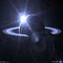

Pierwszy widoczek Opis pierwszego widoczka A to normalnie o tej porze drugi widoczek Jak widać na załączonym obrazku zajebisty widoczek. Pierścienie, pierścionki  Nie wiem co napisać, więc nic nie napiszę, bo mi się nie chce jak cholera. O!